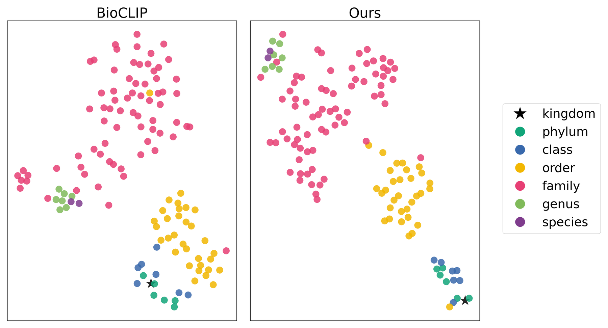

Beyond Flat Labels: Level-Restricted Contrastive Learning for Hierarchical Fine-Grained Vision Classification
1 The Ohio State University 2 Washington University in St. Louis 3 Neuromatch 4 Boston University † Correspondence: {tao.623, gu.1220}@osu.edu
In one paragraph
CLIP-style models often predict a species whose genus, family or order contradicts what the same model predicts at those higher levels. We trace this to false negatives that appear when labels from different taxonomic levels share one contrastive objective, and fix it by contrasting each label only against labels of the same level, with every level weighted equally. Fine-tuning BioCLIP this way on TreeOfLife-10M makes zero-shot predictions far more accurate at every level and far more consistent along the taxonomy, in both Euclidean and hyperbolic embedding spaces.
Abstract
Multimodal contrastive learning has enabled zero-shot visual classification by aligning images with textual categories. However, in hierarchically structured label spaces, existing methods often produce predictions that are inconsistent across taxonomic levels. For example, a model may predict a fine-grained category whose parent category contradicts its simultaneously predicted higher-level label. By analysis, the issue originates from false negative labels when contrastive comparison involves multiple taxonomic levels. To this end, we propose to restrict contrastive comparisons to categories within the same taxonomic level. In addition, we adopt a group-balanced design, ensuring each taxonomic level receives adequate optimization. As a result, the proposed framework improves both hierarchical consistency and classification accuracy from coarse to fine granularity. We train our model with TreeOfLife-10M based on BioCLIP and evaluate it across multiple hierarchical classification benchmarks, where the model demonstrates significantly improved hierarchical consistency in both Euclidean and hyperbolic spaces. Notably, on iNaturalist 2021 (iNat21), our method improves average accuracy across levels by 30.47% over the baseline, highlighting its effectiveness for hierarchical zero-shot classification. We have released our Euclidean and hyperbolic models on HuggingFace.
The problem: a flat loss on a hierarchical label space
Standard CLIP-style contrastive learning assumes labels are flat and mutually exclusive: an image and its own text form the positive pair, and every other text in the batch is an equal negative. Taxonomies break that assumption. A lion (Panthera leo) and a wolf (Canis lupus) are different species and different genera, yet both belong to the order Carnivora. Whether two samples should be pulled together or pushed apart depends on the level you ask about.
When labels from several levels are mixed in one contrastive objective, there is no consistent way to define negatives. Labels that are semantically compatible with an image, such as its own ancestors, end up being pushed away. The model receives conflicting supervision, and its predictions at different levels stop agreeing with each other.
Flat comparison
One softmax over labels from every level. Image: a lion.
…, Felidae, Panthera, leo✓ positive…, Canidae, Canis, lupusnegative…, Mammalia, Carnivora✕ false negative
The order-level label came from a wolf image in the batch, so it is treated as a negative, even though the lion is also a carnivoran.
Level-restricted comparison
One softmax per level. Same lion, same batch.
Order level
…, Mammalia, Carnivora✓ positive
Species level
…, Felidae, Panthera, leo✓ positive…, Canidae, Canis, lupusnegative
Within one level, labels are mutually exclusive, so the contrastive objective is well defined again.
Illustration of the lion and wolf example from the paper's introduction.
Method: level-restricted contrastive learning
![Diagram of level-restricted contrastive learning. Images pass through an image encoder to produce image embeddings. For each image, text labels are built at every taxonomic level (kingdom, phylum, through species) and passed through a text encoder. A separate contrastive loss is computed at each level: at the kingdom level, images are grouped under Kingdom A or Kingdom B; at the phylum level under Phylum A or Phylum B; at the species level each image has its own species. The per-level losses are combined into one total loss.](assets/method.png)
- One text label per level, built from the taxonomy prefix.
For a taxonomy with L levels, an image with labels (t1, …, tL) gets L texts, where the level-ℓ text contains the prefix up to that level, formatted as “An image of t1, t2, …, tℓ”.
- KingdomAn image of Animalia
- PhylumAn image of Animalia, Chordata
- ClassAn image of Animalia, Chordata, Mammalia
- OrderAn image of Animalia, Chordata, Mammalia, Carnivora
- FamilyAn image of Animalia, Chordata, Mammalia, Carnivora, Canidae
- GenusAn image of Animalia, Chordata, Mammalia, Carnivora, Canidae, Canis
- SpeciesAn image of Animalia, Chordata, Mammalia, Carnivora, Canidae, Canis, lupus
- Contrast only within a level. A separate contrastive loss is computed for each level, and each loss involves only that level's labels. A species label is compared only with other species labels, an order label only with other order labels.
- Merge duplicate labels in the batch. At coarse levels many images in a mini-batch share a label (two species from the same kingdom). The labels of a level are deduplicated into a set 𝒦 of unique text embeddings, and every image that carries a label counts as a positive for it, so the same label is never both a positive and a negative.
- Balance the levels. The final loss is the plain average of the per-level losses. Equal weight keeps fine-grained levels from being drowned out by high-confidence coarse-level signals.
Objective
With image embedding vi, its level-ℓ text embedding zi, batch size N, temperature τ, and 𝒦 the set of unique text embeddings at that level, the image-to-text loss is
For the text-to-image direction, let 𝒫k be the images whose label is zk and sjk = ⟨vj, zk⟩/τ. Averaging over each label's positives mitigates category-frequency imbalance within the mini-batch:
The level objective is ℒℓ = ℒℓI→T + ℒℓT→I, and the training objective averages the levels:
Euclidean and hyperbolic variants
The same objective is trained in two embedding spaces. The Euclidean model uses the usual inner-product similarity. The hyperbolic model uses the Lorentz (hyperboloid) model with fixed curvature c = 1: encoder outputs are not ℓ2-normalized, they are scaled by learnable scalars and lifted onto the manifold with the exponential map at the origin, following MERU. Similarity is the negative oxy-angle divided by the temperature, used in both training and zero-shot inference.
Training setup
- Initialization: BioCLIP ViT-B/16, fine-tuned on TreeOfLife-10M.
- 30 epochs, AdamW, batch size 4096, learning rate 10−4, weight decay 0.2.
- A single temperature parameter shared across all taxonomy levels.
- Seven levels: kingdom, phylum, class, order, family, genus, species. The same prompt format is used for training and evaluation.
Results
We evaluate zero-shot classification on three benchmarks: iNat21 (broad taxonomic coverage), Rare Species (rare, long-tailed species absent from TreeOfLife-10M) and CrypticBio (visually ambiguous species). Baselines are OpenCLIP, BioCLIP, and RCME, which also fine-tunes BioCLIP on TreeOfLife-10M.
- Ours · Euclidean
- Ours · Hyperbolic
- RCME
- BioCLIP (starting point)
Each level predicted independently
Top-1 accuracy (%) on iNat21
Top-down constrained inference
Top-1 accuracy (%) on iNat21
BioCLIP is strongest at kingdom, dips to 27% at order, and only partly recovers by species. Level-restricted training lifts the middle of the hierarchy, and under top-down inference, where one wrong step ruins everything below it, the gap widens with depth. OpenCLIP is left out of the chart for legibility and appears in the tables.
| Method | Space | Kingdom | Phylum | Class | Order | Family | Genus | Species | Avg. |
|---|---|---|---|---|---|---|---|---|---|
| OpenCLIP | Euclidean | 84.76 | 35.37 | 26.08 | 19.25 | 7.71 | 6.80 | 2.09 | 26.01 |
| BioCLIP | Euclidean | 86.28 | 56.14 | 41.69 | 26.95 | 30.37 | 47.21 | 50.79 | 48.49 |
| RCME | Euclidean | 86.26 | 83.00 | 70.79 | 46.46 | 44.74 | 59.28 | 50.50 | 63.00 |
| Ours | Euclidean | 98.85 | 98.39 | 67.23 | 78.22 | 78.69 | 68.36 | 63.00 | 78.96 |
| Ours | Hyperbolic | 98.97 | 98.48 | 71.81 | 75.84 | 82.25 | 73.96 | 51.35 | 78.95 |
| Method | Space | Kingdom | Phylum | Class | Order | Family | Genus | Species | nLCA |
|---|---|---|---|---|---|---|---|---|---|
| OpenCLIP | Euclidean | 84.76 | 30.44 | 10.62 | 3.81 | 0.78 | 0.28 | 0.12 | 0.19 |
| BioCLIP | Euclidean | 75.38 | 61.34 | 48.22 | 16.85 | 9.71 | 6.73 | 4.80 | 0.32 |
| RCME | Euclidean | 86.27 | 78.46 | 63.97 | 29.59 | 18.25 | 13.00 | 8.92 | 0.43 |
| Ours | Euclidean | 98.85 | 98.41 | 74.52 | 68.28 | 60.31 | 47.92 | 33.64 | 0.69 |
| Ours | Hyperbolic | 98.97 | 98.53 | 77.15 | 69.03 | 62.79 | 52.64 | 36.89 | 0.71 |
| Method | Space | Phylum | Class | Order | Family | Genus | Species | Avg. |
|---|---|---|---|---|---|---|---|---|
| OpenCLIP | Euclidean | 75.89 | 60.87 | 33.32 | 13.31 | 15.27 | 10.62 | 34.88 |
| BioCLIP | Euclidean | 68.35 | 65.16 | 54.63 | 40.01 | 47.43 | 31.82 | 51.23 |
| RCME | Euclidean | 82.38 | 81.67 | 69.01 | 44.12 | 50.95 | 35.58 | 60.62 |
| Ours | Euclidean | 98.19 | 93.02 | 83.27 | 67.41 | 55.08 | 40.68 | 72.94 |
| Ours | Hyperbolic | 97.99 | 92.64 | 83.33 | 69.06 | 57.22 | 43.20 | 73.91 |
| Method | Space | Order | Family | Genus | Species | Avg. |
|---|---|---|---|---|---|---|
| OpenCLIP | Euclidean | 55.37 | 15.92 | 6.41 | 6.17 | 20.97 |
| BioCLIP | Euclidean | 81.34 | 39.29 | 37.71 | 36.72 | 48.77 |
| RCME | Euclidean | 90.11 | 49.84 | 39.45 | 38.97 | 54.59 |
| Ours | Euclidean | 97.98 | 72.65 | 46.30 | 40.37 | 64.33 |
| Ours | Hyperbolic | 96.80 | 78.01 | 52.18 | 49.98 | 69.24 |
What the numbers say
- Best average accuracy on every benchmark. Against RCME, the best variant gains 15.96 points on iNat21, 13.29 on Rare Species and 14.65 on CrypticBio.
- The largest gains are in the middle of the hierarchy (order to genus), where a standard contrastive loss suffers most from cross-level ambiguity.
- Species accuracy improves too, even though training no longer focuses on the species level alone: 50.79% to 63.00% on iNat21 with the Euclidean model.
- Predictions stay on the right branch. Under top-down inference the hyperbolic model reaches nLCA 0.71 against 0.43 for RCME, and beats RCME by 44.54, 39.64 and 27.97 points at family, genus and species level.
- The two spaces are complementary. Euclidean is best on iNat21 and at iNat21 species level. Hyperbolic is best on Rare Species and CrypticBio and consistently better under top-down inference.
Hierarchy emerges in the text embedding space

Models
Both checkpoints are released on Hugging Face under the MIT license and load with OpenCLIP.
- BioCLIP-HC-Euclidean: huggingface.co/imageomics/bioclip-hc-euclidean
- BioCLIP-HC-Hyperbolic: huggingface.co/imageomics/bioclip-hc-hyperbolic
import open_clip
model, preprocess_train, preprocess_val = open_clip.create_model_and_transforms(
"hf-hub:imageomics/bioclip-hc-euclidean")
tokenizer = open_clip.get_tokenizer("hf-hub:imageomics/bioclip-hc-euclidean")For zero-shot classification at a given level, write each candidate as the cumulative taxonomy prefix used in training, for example An image of Animalia, Chordata, Mammalia, Carnivora for an order-level candidate, and compare the image only with candidates of that level. For hierarchically consistent output, predict top-down: choose the kingdom first, then restrict each following level to the children of the label just predicted. The hyperbolic model scores image–text pairs with the negative oxy-angle described above instead of cosine similarity.
Questions and answers
What is level-restricted contrastive learning?
It is a CLIP-style training objective for hierarchical label spaces. Each image gets one text label per taxonomic level (kingdom through species), and the contrastive loss is computed separately at each level, so a label is only ever compared with other labels of the same level. The per-level losses are then averaged with equal weight.
Why do CLIP-style models make hierarchically inconsistent predictions?
Standard contrastive learning assumes a flat, mutually exclusive label space and treats every non-matching text as an equal negative. When labels from several taxonomic levels share one contrastive objective, semantically compatible labels, such as an ancestor of the true class, are pushed away as false negatives. A lion and a wolf differ at species and genus level but share the order Carnivora, so there is no consistent way to define negatives across levels.
How is this different from RCME, MERU and other hyperbolic or entailment-based methods?
Those approaches add geometry objectives or hierarchy-oriented architectures. Level-restricted contrastive learning changes only how negatives are defined in the contrastive objective, and it applies in both Euclidean and hyperbolic embedding spaces. Against RCME, which also fine-tunes BioCLIP on TreeOfLife-10M, the best variant is more than 13 points higher in average accuracy on iNat21, Rare Species and CrypticBio.
Is hyperbolic space required?
No. The Euclidean model reaches 78.96% average accuracy on iNat21 and the hyperbolic model 78.95%. The hyperbolic variant is stronger on Rare Species, CrypticBio and under top-down constrained inference (normalized LCA 0.71 versus 0.69).
Does balancing all taxonomic levels hurt species-level accuracy?
No. On iNat21, species-level top-1 accuracy rises from 50.79% for BioCLIP to 63.00% for the Euclidean model. Species accuracy also improves on Rare Species (31.82% to 43.20%) and CrypticBio (36.72% to 49.98%) with the hyperbolic model.
How is hierarchical consistency measured?
With top-down constrained inference: predictions run from coarse to fine, and at each level the candidates are restricted to valid descendants of the predicted parent, so an early mistake propagates to every level below. We also report normalized Lowest Common Ancestor (nLCA) depth, the depth at which the predicted and ground-truth taxonomic paths still agree, divided by the hierarchy depth.
Does the method only apply to biology?
The experiments in the paper are on biological taxonomies (TreeOfLife-10M for training; iNat21, Rare Species and CrypticBio for evaluation). The objective itself is written for any label taxonomy with L levels in which the labels within a level are mutually exclusive. Other domains have not been tested in this work.
Where can I download the models?
Both models are on Hugging Face under the MIT license: imageomics/bioclip-hc-euclidean and imageomics/bioclip-hc-hyperbolic. They load with OpenCLIP via the hf-hub: prefix.
Citation
@article{tao2026beyondflatlabels,
title = {Beyond Flat Labels: Level-Restricted Contrastive Learning for Hierarchical Fine-Grained Vision Classification},
author = {Tao, Zhiyuan and Sastry, Srikumar and Thompson, Matthew J and Campolongo, Elizabeth G and Zhang, Net and Zhang, Ziheng and Lapp, Hilmar and Su, Yu and Berger-Wolf, Tanya and Jacobs, Nathan and Chao, Wei-Lun and Gu, Jianyang},
journal = {arXiv preprint arXiv:2606.21838},
year = {2026},
note = {Accepted to the CVPR 2026 FGVC Workshop}
}Acknowledgment
This work was supported by the U.S. National Science Foundation (OAC-2118240) and resources from the Ohio Supercomputer Center.